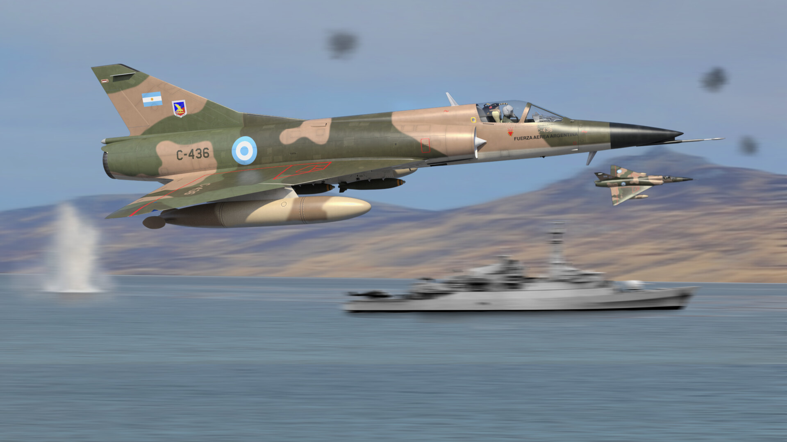
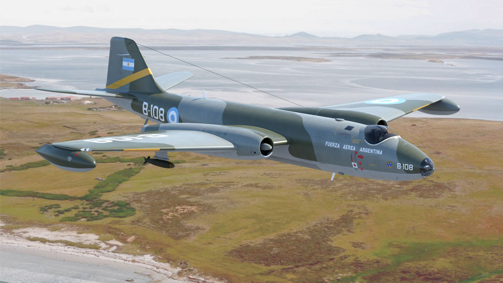

AIRE Y MAR: la Guerra ganada.
Durante los meses que duró el Conflicto, la Fuerza Aérea Argentina se destacó en la Defensa Aérea y Territorial, desplegando
numerosas estrategias operacionales. Estas estrategias se convirtieron en los hitos de mayor relevancia en la aviación
argentina, dando cuenta del heroísmo de los integrantes de la Institución quienes con valentía se dispusieron a defender
nuestra Patria y recuperar las Malvinas.
El 1º de mayo de 1982, alrededor de las 04:40 de la madrugada, comenzaría la hazaña de las Fuerzas Armadas por defenderse de los ataques Británicos. Aquel día, la
Fuerza Aérea Argentina dispuso de 58 misiones que fueron cumplidas por aviones de combate IA 58 Pucará, A-4B Skyhawk y A-4C, Mirage M-IIIE y Mirage IAI M 5 Dagger, y con los ombarderos Canberra MK-62/64.
Estas acciones provocaron que 4 Sea Harrier británicos fueran derribados por la Artillería Antiaérea de la Base Aérea Militar Malvinas. También fueron averiados otros
2 Sea Harrier, y se deterioraron 2 destructores y 2 fragatas. Mientras tanto, los KC-130 Hercules trabajaban arduamente reabasteciendo a los Skyhawk A-4B, y los helicópteros de transporte Chinook trasladaban heridos desde la Base Aérea Militar Cóndor hacia Puerto Argentino.
Este día pasaría a la historia como el Bautismo de Fuego de la Fuerza Aérea Argentina”.
Durante todo del conflicto, se realizaron 445 salidas de combate efectivas, en las cuales se desarrollaron ataques a objetivos navales y terrestres. También se
realizó el traslado de tropas y víveres, y el reabastecimientos en vuelo de aviones de combate.
Durante la campaña bélica, tuvieron una destacada actuación los Sistemas de Armas KC-130 Hercules, C130-H Hercules, Fokker F-27 y F-28, Boeing 707, IA 50 GII, Mirage
M-III EA e IAI M5 Dagger, A-4B y A-4C Skyhawk, Canberra MK-62/64, Bell 212, Chinook CH-47, Hughes 500, Lear Jet 35 A, IA-58 Pucará, DHC-6 Twin Otter, Merlin IV. Además, también tuvieron un rol importante durante el Conflicto el Escuadrón Fénix y Líneas Aéreas del Estado (LADE).

Super Etendart
(1982) Recibe la medalla en "Honor al Valor en Combate".
Info

Dagger
dejaron grandes pérdidas a la flota británica.
Info

Mirage III
Aviones de ataque a larga distancia aire-aire.
Info

Mirage V
Gobierno de Peru envia en modo de apoyo a la FAA.
Info

Fokker F-28
Avion de transporte de soldados a Malvinas.
Info

Hercules C-130
Avion de transporte de personal y logistico.
Info

A4 SkyHawk
Los A4 fueron los Verdugos del HMS “Coventry".
Info

Pucara IA-58
Avión de ataque a tierra con turbohelice.
Info

Camberra
Bombardeo al petrolero britanico "Hercules".
Info
La guerra de la Armada Argentina...
La misión que recibieron los comandantes al partir hacia Malvinas fue breve y clara: “Reconquistar las Islas Malvinas a fin de incorporarlas definitivamente a la Soberanía de la Nación.”
la participación de la Infantería de Marina en el Conflicto del Atlántico Sur puede dividirse en dos etapas: el de la recuperación de la soberanía - concretamente el 2 de abril de 1982 - y, a posteriori, en la defensa de las Islas, consecuencia de la escalada militar.
Un incidente con obreros argentinos que realizaban el desguace de una antigua factoría ballenera en la isla San Pedro fue calificado de ilegal. Así se puso en marcha un intercambio de notas infructífero entre cancillerías, por lo que la Junta Militar como gobierno nacional, hizo efectivo un precipitado plan de acción que tenía como objetivo recuperar la soberanía sobre “la perla austral”.
Se le asignó la responsabilidad a la Armada de reconquistar y asegurar Puerto Argentino de forma incruenta, garantizando en todo momento la seguridad de las personas y de los bienes y de los habitantes de la ciudad.
Aquel otoño del ‘82 el componente naval comenzó a desplegarse en pos de la concreción de la Operación Anfibia "Rosario".
Así comenzó el despliegue de más de una decena de buques que conformaron diferentes grupos de tareas. Durante los 74 días que duró la guerra su accionar fue indispensable, efectivo y heroico.
Durante la toma de Puerto Argentino se volvió fundamental el destructor ARA “Santísima Trinidad”. Sus capacidades permitieron el desembarco de las fuerzas especiales durante la "Operación Rosario", como así también el submarino ARA “Santa Fe”.
El ARA “Santísima Trinidad” fue acompañado por el ARA “Hércules”, el cual marcó el camino a la Fuerza de Desembarco en su acceso a tierra firme. Por su parte, los destructores ARA “Domecq García”, ARA “Seguí”, ARA “Bouchard”, ARA “Py” y ARA “Piedrabuena” fueron encargados de controlar el área marítima realizando patrullajes para evitar el paso de unidades enemigas.
En la misma operación tuvo su participación el Portaaviones ARA “25 de Mayo” como buque control de aeronaves de ataque y control aéreo. La Armada Argentina pudo cubrir y desplegar a su Grupo Aéreo Embarcado (GAE), de una manera que no hubiese sido posible hacer desde tierra firme. Por su actuación se le otorgó a la unidad la condecoración “Operaciones de Combate”.
El rompehielos ARA “Almirante Irízar” en un inicio fue puente logístico, transportando tropas y pertrechos. En las horas más cruentas de la guerra fue configurado como buque hospital junto con el buque ARA “Bahía Paraíso”. El coloso naranja arribó a cercanías del teatro de operaciones con su exterior repintado de blanco con una cruz roja, que indicaba el inicio de su misión sanitaria. Zarpó con más de 200 camas, quirófanos, laboratorios, salas de terapia, rayos, traumatología y quemados, helicópteros embarcados y varias decenas de profesionales de la salud.
La División de Corbetas estuvo conformada por las corbetas ARA “Drummond”, ARA “Granville” y ARA “Guerrico”. Las dos primeras formaron parte de la Fuerza de Tareas Anfibia, brindando protección y apoyo a las unidades encargadas de desembarcar el 2 de abril; mientras que la última participó del Grupo de Tareas que tenía como fin recuperar las islas Georgias del Sur.
Aquí vale la mención del combate en Grytviken, donde la corbeta ARA “Guerrico” tuvo una actuación destacada en el desembarco y toma de posición de combate de una fracción de Infantes de Marina. Era 3 de abril cuando precedió al “Bahía Paraíso” –a bordo del cual se encontraba el Grupo de Desembarco en el ingreso a la bahía Cumberland, efectuando una búsqueda electrónica y comprobando la ausencia de unidades británicas.
El “Belgrano”: custodio eterno del mar austral

Cómo olvidar aquel crucero de 3900 toneladas que había sido puesto en servicio dos años antes de la guerra. El 16 de abril de 1982 zarpó desde la Base Naval Puerto Belgrano hacia el este de la zona de conflicto con 1093 tripulantes. Los testimonios y relatos describen ese momento como de una incertidumbre completa, de una esperanza simbolizada en la promesa de volver y de una movilización por defender la Patria.
Debía mantenerse fuera del área de exclusión vigilando las intenciones de las fuerzas enemigas. Luego de recalar en Ushuaia, se reunió con dos destructores. El 1° de mayo recibió la orden de atacar por el sur pero ya habían sido detectados por el submarino nuclear HMS “Conqueror” que se había posicionado en cercanías de ellos.
Al día siguiente se le ordenó replegarse, pero su destino ya estaba marcado. Fue a las 16:02 horas cuando el primer torpedo Mark 8 impactó en la sala de máquinas, disparado a una distancia de tan sólo 5 km. El segundo impacto fue en la proa, destruyéndola casi por completo. No había opción y la tripulación escuchó a las 16:23 horas la orden de abandonar el buque.
Media hora después, el “Belgrano” se hundió en las gélidas aguas australes, dejando a la deriva balsas con hombres que enfrentaron durante casi dos días “Mar 4, visibilidad 500 yardas y viento del noroeste a 30 kms/h” (fragmento del SITREP emitido por el A.R.A. “Piedrabuena” en misión de rescate). Las bravías olas dificultaron la supervivencia y posterior rescate de los náufragos, quienes ante cada contingencia superada creían firmemente volver a nacer.
Durante el ataque fallecieron 323 tripulantes y fueron rescatados 770. Fue una gran proeza encontrar las balsas en las condiciones climatológicas reinantes, lo cual no hubiera sido posible sin la acción de un Neptune de la Aviación Naval que las divisó y de la determinación de los tripulantes a bordo del ARA “Gurruchaga”, del ARA “Bouchard”, del ARA “Piedrabuena” y del ARA "Bahía Paraíso" como buque hospital, que fueron quienes los rescataron. Ningún marino deja a otro marino en el mar.